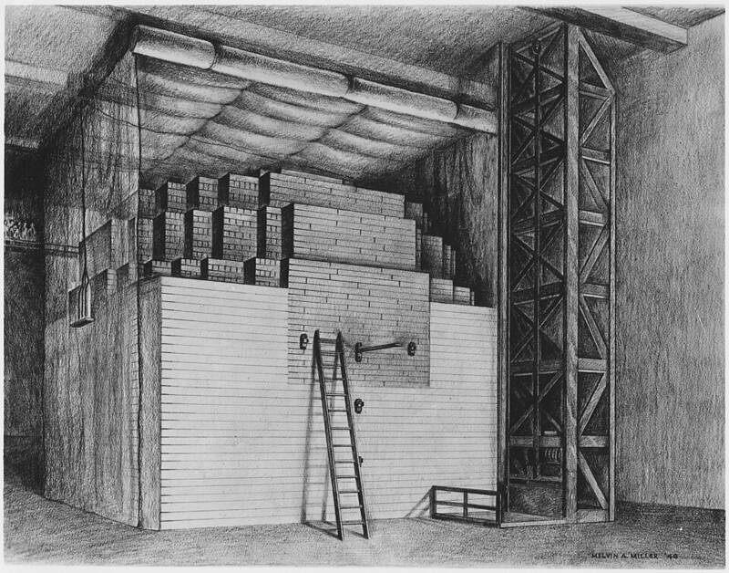

Chicago Pile-1
Manhattan Project, 1942

The first controlled nuclear chain reaction, under the stands of the University of Chicago's football field. Confirmed program. 1
Open in the interactive Watcher
Sources
- Chicago Pile-1 Wikipedia
Manhattan Project, 1942

The first controlled nuclear chain reaction, under the stands of the University of Chicago's football field. Confirmed program. 1
Open in the interactive Watcher